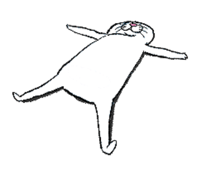

"Oh, look at that font strutting
—someone's in a showoff mood!" ¬_¬
About Me (Spoiler: I'm Awesome...
or just awkwardly humble, who knows?)

I'm Zahidullah, a passionate UI/UX Designer and Web Developer with a knack for creating digital experiences that users love. I believe design should be as functional as it is beautiful, and I obsess over every pixel to make that happen.
When I'm not designing or coding, you'll find me exploring new technologies, drinking way too much coffee, or making terrible cat puns (as you might have noticed).
My approach combines technical expertise with creative problem-solving. I don't just make things look pretty—I make them work beautifully.
"Want to see what I can do? Check out my work! ^_~ ✨"